APPENDIX
附录
写字表、词语表，以及封面、版权、目录和封底。
收录范围
- 教材前置页面：PDF 第 1–5 页
- 写字表：教材第 130–131 页
- 词语表：教材第 132–136 页
- 封底：PDF 第 142 页
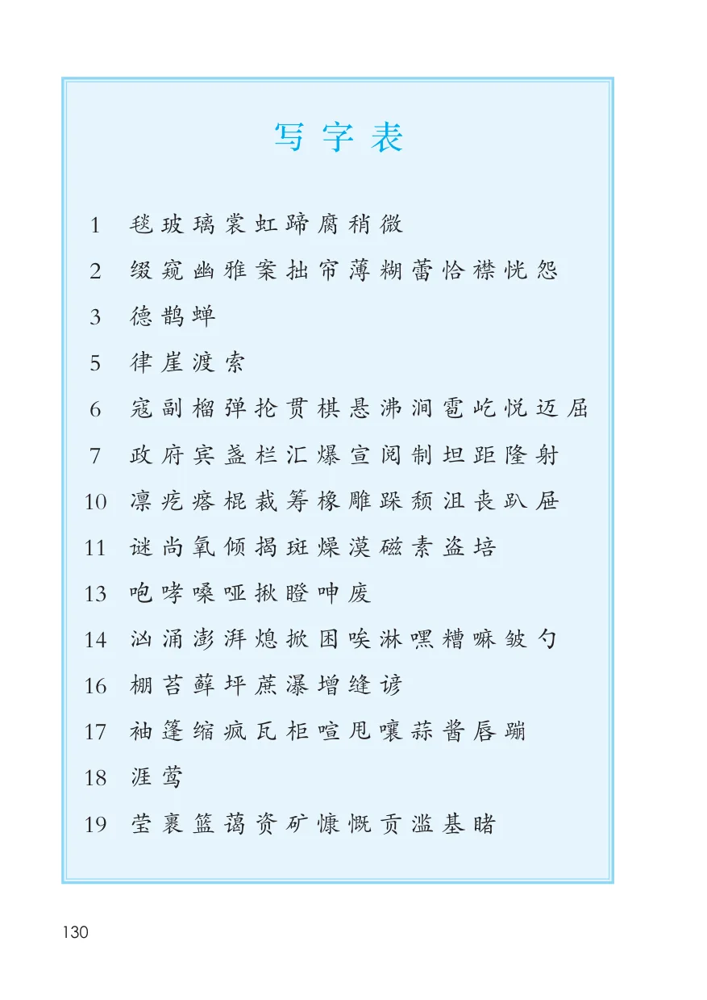
附录 · PDF 1–5
封面、扉页、版权与目录
PDF 第 1 页
查看原页全国优秀教材特等奖义务教育教科书六年级上册
PDF 第 2 页
查看原页义务教育教科书
六年级
上册
教育部组织编写
总主编温儒敏
·北京·
PDF 第 3 页
查看原页总主编：温儒敏小学主编：陈先云（执行） 曹文轩崔峦李吉林编写人员：（以姓氏笔画为序）丛智芳何源张立霞陈先云郑宇柯孔标曹文轩常志丹责任编辑：张立霞何源常志丹美术编辑：李宏庆义务教育教科书语文六年级上册教育部组织编写出版（北京市海淀区中关村南大街 17 号院 1 号楼邮编：100081）
网址 http://www.pep.com.cn版权所有·未经许可不得采用任何方式擅自复制或使用本产品任何部分·违者必究如发现内容质量问题，请登录中小学教材意见反馈平台：jcyjfk.pep.com.cn
PDF 第 4 页
查看原页目录第一单元.......................................1 ◎ 语文园地 ..................................331 草原............................................22 丁香结........................................5 第三单元......................................35
3 古诗词三首................................8 10 竹节人.......................................36宿建德江.................................8 11 宇宙生命之谜...........................40六月二十七日望湖楼醉书.......8 12* 故宫博物院...............................44
西江月·夜行黄沙道中...........9 ◎ 习作： 让生活更美好.....504* 花之歌.......................................10 ◎ 语文园地 ..................................51
◎ 习作：变形记...........................12
◎ 语文园地 ..................................13 第四单元......................................5313 桥...............................................54第二单元......................................15 14 穷人...........................................57
5 七律·长征...............................16 15* 金色的鱼钩...............................626 狼牙山五壮士...........................18 ◎ 口语交际：请你支持我...........677 开国大典...................................21 ◎ 习作：笔尖流出的故事...........68
8* 灯光...........................................26 ◎ 语文园地...................................699* 我的战友邱少云.......................28 ◎ 快乐读书吧：
◎ 口语交际：演讲.......................31 笑与泪，经历与成长...........71
◎ 习作：多彩的活动...................32
第五单元......................................73 伯牙鼓琴..............................10216 夏天里的成长...........................74 书戴嵩画牛..........................10317 盼...............................................76 23 月光曲......................................105
◎ 习作例文： 24* 京剧趣谈..................................107爸爸的计划...........................81 ◎ 口语交际：聊聊书法..............109小站.......................................82 ◎ 习作：我的拿手好戏..............110
◎ 习作：围绕中心意思写...........84 ◎ 语文园地..................................111第六单元......................................85 第八单元.....................................11318 古诗三首...................................86 25 少年闰土..................................114
浪淘沙（其一）.....................86 26 好的故事..................................118江南春...................................86 27* 我的伯父鲁迅先生..................121书湖阴先生壁.......................87 28* 有的人—纪念鲁迅有感......125
19 只有一个地球...........................88 ◎ 习作：有你，真好..................12720* 青山不老...................................90 ◎ 语文园地..................................12821* 三黑和土地...............................92
◎ 口语交际：意见不同怎么办....97 写字表..............................................130
◎ 习作：学写倡议书...................98 词语表..............................................132
◎ 语文园地...................................99标* 的是略读课文第七单元.....................................10122 文言文二则..............................102
附录 · PDF 135–136
写字表
附录 · PDF 137–141
词语表
词语表
1 绿毯线条柔美惊叹回味乐趣目的地
洒脱玻璃衣裳彩虹马蹄热乎乎礼貌
拘束举杯感人会心微笑
2 宅院幽雅伏案浑浊笨拙眼帘参差
单薄文思梦想迷蒙模糊花蕾恰如
衣襟恍然愁怨顺心平淡
6 日寇奋战险要手榴弹全神贯注悬崖
斩钉截铁热血沸腾攀登居高临下山涧
粉身碎骨雹子屹立眺望喜悦壮烈豪迈
不屈惊天动地
7 政府外宾汇集预定爆发排山倒海就位
宣告雄伟肃静语调完毕检阅制服
坦克一致距离高潮次序
10 威风凛凛疙瘩疲倦呆头呆脑冰棍
别出心裁技高一筹橡皮跺脚大步流星
教材第 133 页
查看原页颓然暴露无遗沮丧抽屉念念有词
忘乎所以心满意足
11 发达理论类似猜测起源适当氧气
提供能源昼夜神秘观测拍摄斑点
枯萎干燥沙漠磁场因素考察培养
13 咆哮惊慌嗓子跌跌撞撞拥戴沙哑党员
呻吟废话吞没猛然
14 渔夫汹涌澎湃风暴轰鸣心惊肉跳抱怨
倾听探望照顾困难阴冷自作自受
湿淋淋渔网糟糕忧虑后脑勺
16 活生生苔藓草坪甘蔗瀑布增加缝隙
软绵绵谚语农作物尽量
17 斗篷情况袖子瓦蓝衣柜预报喧闹
遮盖讲座酱油逗引嘴唇
19 晶莹摇篮壮观和蔼资源有限矿产
无私慷慨节制枯竭贡献毁坏滥用
生态设想例如基地目睹子孙
教材第 134 页
查看原页23 谱写钢琴幽静断断续续茅屋失明纯熟
清幽琴键景象陶醉
25 一望无际家景郑重供品祭器讲究盼望
厨房毡帽项圈刺猬伶俐经历潮汛
26 预告烟雾昏沉错综澄碧荡漾解散
退缩瘦削浮动瞬间凝视骤然凌乱
陡然
教材第 135 页
查看原页后记《义务教育教科书语文》（一〜六年级）由教育部组织编写，北京大学中文系温儒敏教授担任总主编。王宁、张联荣、柳士镇、张健、翟京华、郑桂华、陈秀玲、武琼、陈萍等专家对教科书的修改完善给予了悉心指导；金波、伍新春、李明新、沈大安、熊宁宁等多次审阅教科书内容，提出了修改建议；在教育部的组织下，广大一线优秀教师通读教科书，保证了教学的适切性；在试教试用过程中，北京市、天津市、福建省等地教研部门及部分学校给予了大力支持，为教科书质量的进
一步提升提供了保障。人民教育出版社承担了教科书的编辑出版工作，在组织编写、试教试用等方面给予了全方位的协助。人民教育出版社小学语文室全体同仁始终是教科书编写的中坚力量。于泉滢、何保全、王平、孙雪松为本书绘制插图，景绍宗为本书封面绘制插图。北京大学附属小学的学生为本书“书写提示”栏目书写了硬笔书法作品。对教科书的编写、出版提供过帮助的同仁和社会各界朋友还有很多，在此一并表示诚挚的谢意。
教科书投入使用后，我们根据各方意见作了修订，真诚希望广大师生和家长继续提出宝贵意见！联系方式电话：010-58758616电子邮箱：jcfk@pep.com.cn编者2023年7月
教材第 136 页
查看原页本页文字层未能可靠提取，请查看原书页面。
附录 · PDF 142–142
封底
PDF 第 142 页
查看原页® YIWU JIAOYU JIAOKESHU语文六年级上册绿色印刷产品绿色印刷产品
SOURCE PAGES
附录原书页面
点击图片可查看清晰大图。
封面、扉页、版权与目录

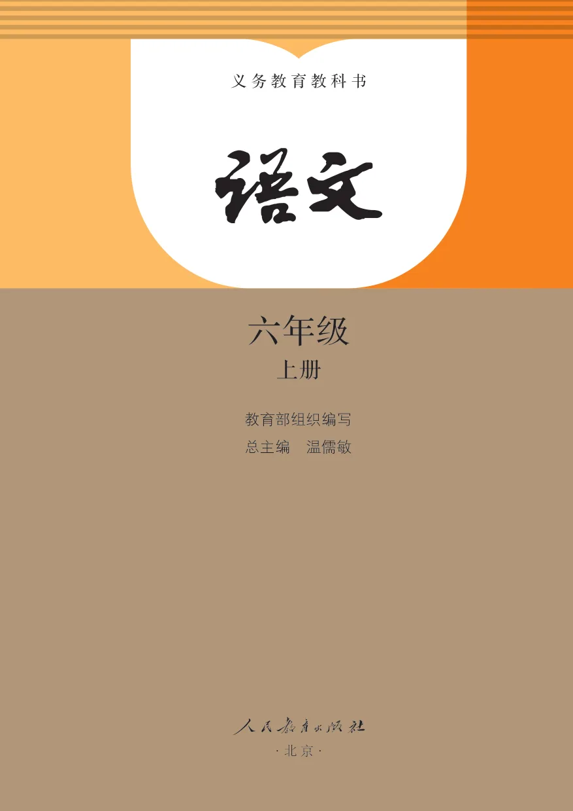
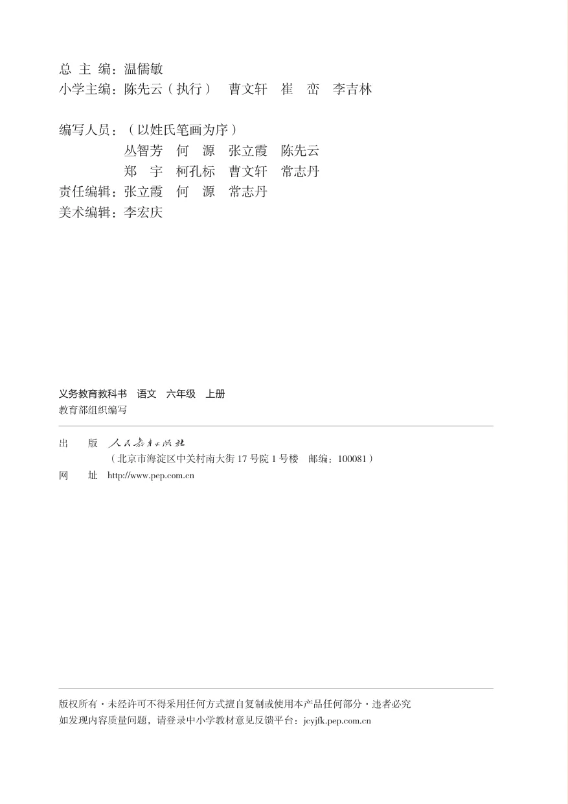
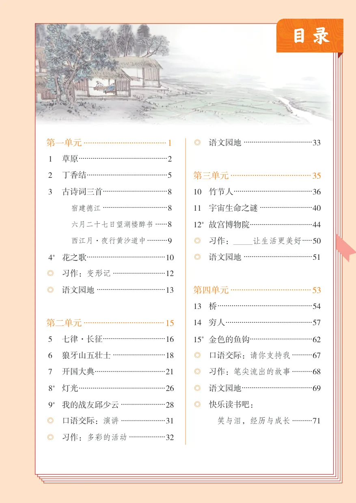
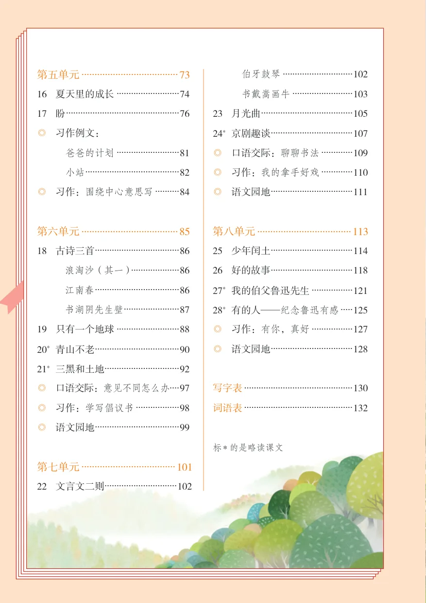
写字表
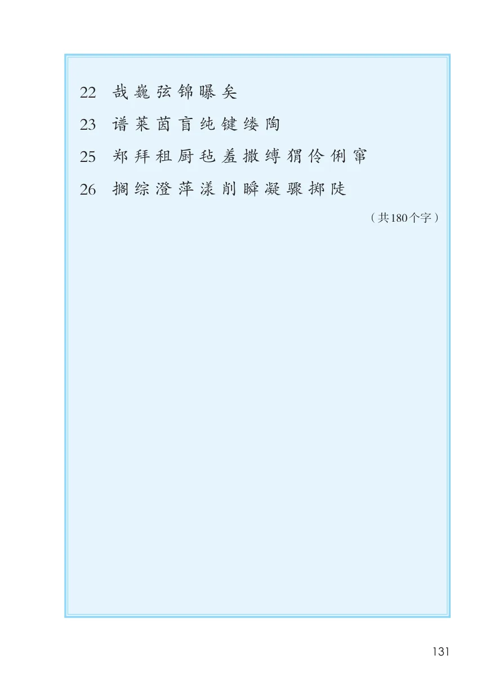
词语表
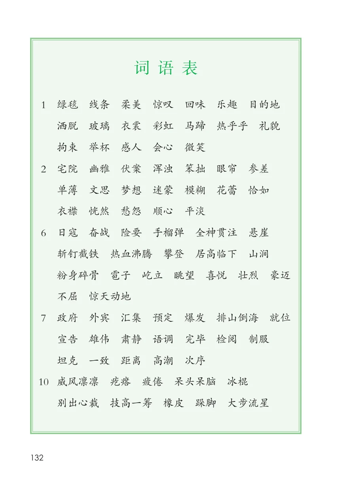
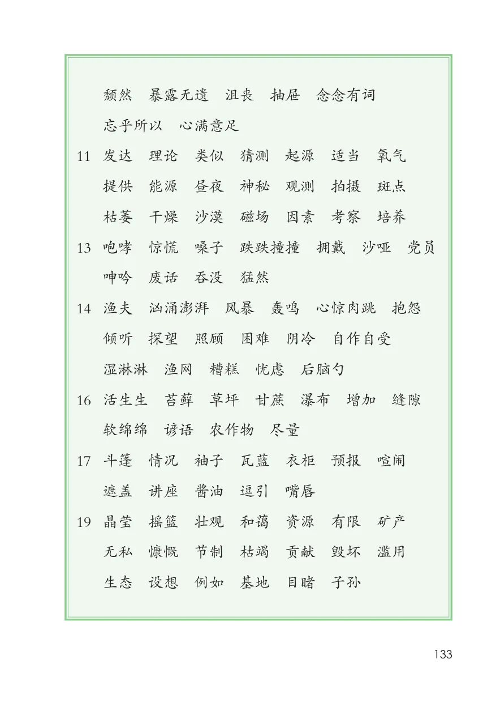
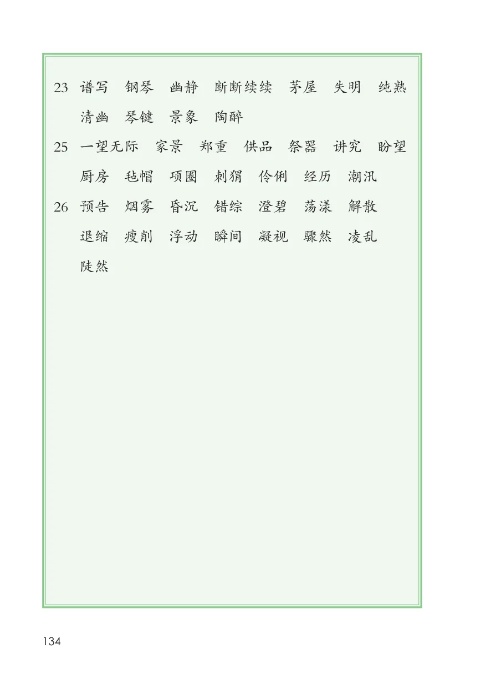
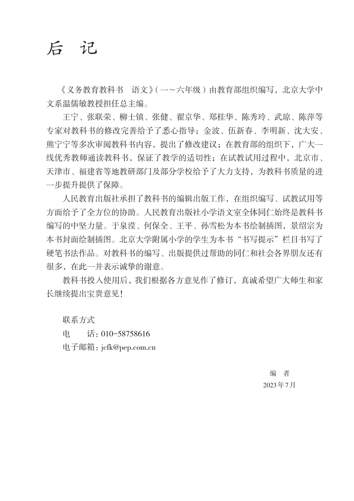
封底
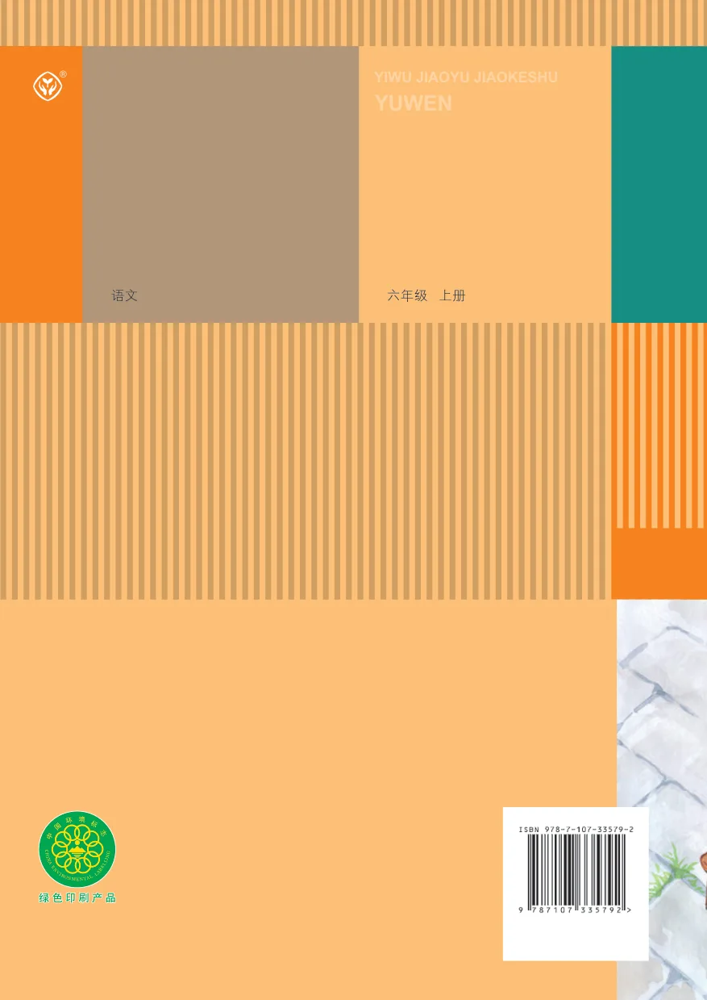